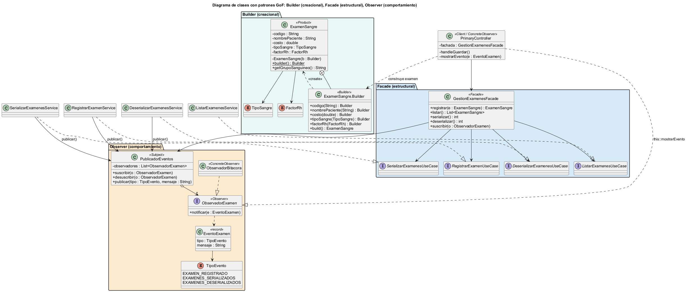

| Categoría | Patrón | Clases participantes | Problema del diagnóstico que ataca |
|---|---|---|---|
| Creacional | Builder | ExamenSangre, ExamenSangre.Builder | Ausencia de modelo, obsesión por primitivos, validaciones dispersas. |
| Estructural | Facade | GestionExamenesFacade, 4 puertos de entrada | Acoplamiento del controlador a múltiples colaboradores / controlador “Dios”. |
| Comportamiento | Observer | PublicadorEventos, ObservadorExamen, EventoExamen, ObservadorBitacora, PrimaryController | Casos de uso que tendrían que escribir directamente en el TextArea; sin auditoría. |

dominio3.png).Un examen tiene cinco atributos obligatorios con reglas (código no vacío y normalizado, nombre no vacío, costo > 0,
tipo de sangre y factor Rh definidos). Con un constructor de cinco parámetros —dos String seguidos— es
fácil intercambiar argumentos, y con setters el objeto puede quedar a medio construir o inválido. En el diseño
original no había entidad y la validación habría quedado repartida en el controlador.
Builder separa la construcción de la representación: los datos se agregan paso a paso con métodos con nombre y
build() valida todas las invariantes antes de crear el objeto. El constructor de ExamenSangre es privado,
por lo que no existe otra forma de obtener un examen inválido. La misma construcción se reutiliza al
deserializar (ExamenRegistro.aDominio()), revalidando datos leídos de disco.
ExamenSangre examen = ExamenSangre.builder()
.codigo(txtCodigoExamen.getText())
.nombrePaciente(txtNombrePaciente.getText())
.costo(leerCosto())
.tipoSangre(TipoSangre.desdeTexto(cmbTipoSangre.getValue()))
.factorRh(rbNegativo.isSelected() ? FactorRh.NEGATIVO : FactorRh.POSITIVO)
.build(); // lanza ExamenInvalidoException si se incumple una regla
ExamenSangreTest (7 pruebas).Con la arquitectura hexagonal existen cuatro puertos de entrada (registrar, listar, serializar, deserializar) más el publicador de eventos. Si el controlador JavaFX dependiera directamente de los cinco, su constructor y su configuración crecerían con cada caso de uso nuevo y volvería a concentrar conocimiento del subsistema.
GestionExamenesFacade ofrece una interfaz simple y unificada al subsistema de aplicación: el adaptador de
entrada recibe un solo objeto (inyectado por ContenedorDependencias a través de un controllerFactory).
La fachada no contiene lógica: solo delega en los puertos, por lo que los casos de uso siguen siendo independientes
y testeables por separado.
GestionExamenesIntegracionTest.Tras registrar o (de)serializar, el resultado debe mostrarse en el área de mensajes. Si los casos de uso
escribieran en el TextArea, la capa de aplicación dependería de JavaFX (violando la regla de dependencias
hexagonal); si cada manejador construyera su propio mensaje, el texto de negocio quedaría duplicado en la UI. Además se
requiere dejar traza (auditoría) de las operaciones sin modificar los casos de uso.
Observer define una dependencia uno-a-muchos: PublicadorEventos (sujeto) notifica un EventoExamen
a todos los ObservadorExamen suscritos. Los casos de uso solo conocen al sujeto. Hay dos observadores
concretos: el controlador (this::mostrarEvento, que escribe en pantalla) y ObservadorBitacora
(registro con java.util.logging).
PublicadorEventosTest, ServiciosExamenTest).| Criterio | Diseño original | Diseño con hexagonal + patrones |
|---|---|---|
| Acoplamiento | Toda la lógica destinada al controlador JavaFX | UI → Fachada → Puertos; adaptadores intercambiables |
| Cohesión | Sin modelo; datos como texto | Entidad con reglas; un caso de uso por clase |
| Extensibilidad | Cambios requieren editar el controlador | Nuevos adaptadores u observadores sin modificar el núcleo |
| Mantenibilidad | 0 pruebas; no arranca con Maven | 17 pruebas JUnit 5, ~78 % de cobertura (JaCoCo), JavaDoc, Sonar |
App.scene; se prefirió inyección desde la raíz de composición.AlmacenamientoExamenesPort ya permite intercambiar implementaciones; habría sido redundante.